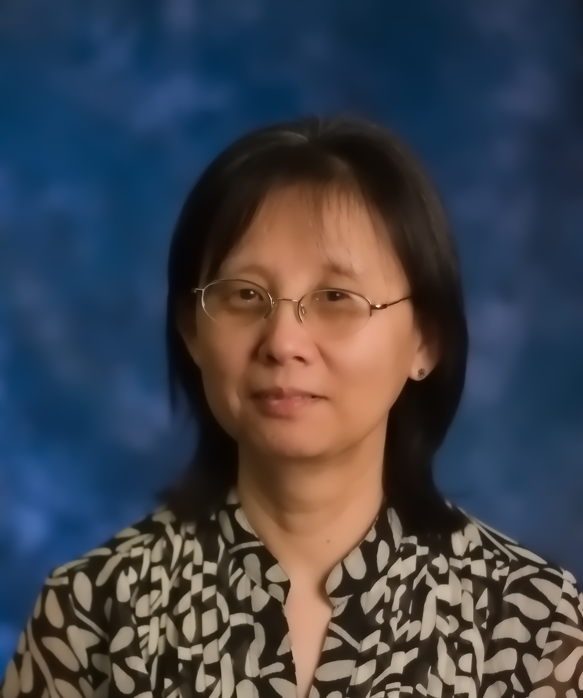
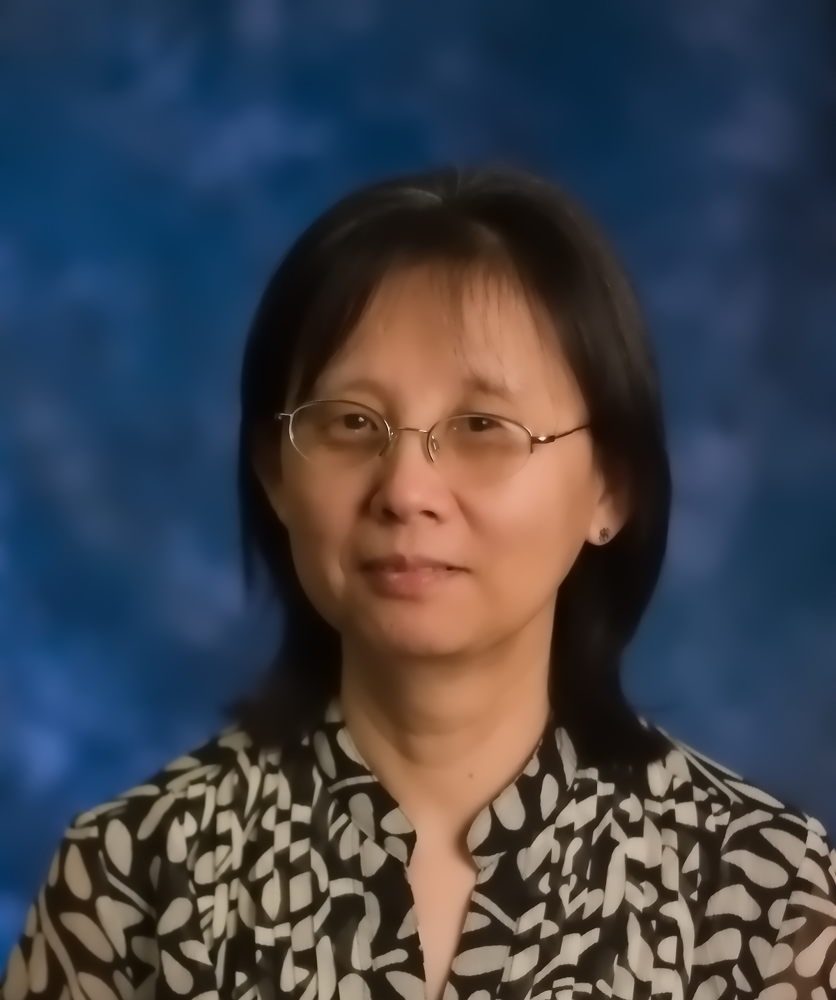

|
Yuan Wang
Professor and Chair
Department of Mathematics and Statistics
Florida Atlantic University
777 Glades Rd
Boca Raton, FL 33431
Office:
The Science Building (#43, SE) 226
Tel: (561) 297-3340
Fax: (561) 297-2436
Email: ywang@fau.edu
URL: https://ywang-fau.github.io
Dr. Yuan Wang is a Professor in the Department of Mathematics and Statistics and currently serves as Chair of the department. She received her Ph.D. in Mathematics from Rutgers University in 1990. Her research interests include the mathematical theory of systems and control, stability analysis, nonlinear control systems, and feedback stabilization. She has published numerous papers on these topics and is recognized for her contributions to the field, including the NSF Young Investigator’s Award in 1993 and being named an IEEE Fellow in 2013.
Research Grants
- PI: NSF Grant DMS—9108250, ``Input/Output Equations and Nonlinear Realizability'‘, August 1991—July 1993.
- PI: NSF Grant DMS—9403924, ``Nonlinear Control Theory: Topics Related to Stabilizability, Observability and Realizability'', June 1994—May 1996.
- PI: NSF Young Investigator Award DMS—9457826, August 1994—July 2000.
- PI: NSF Grant DMS—0072620, ``Characterizations on Stability Properties for Nonlinear Systems'‘, July 2000—June 2004.
- PI: NSF Grant DMS--0504557, ``Collaborative Research: Nonlinear Control Analysis and Design Based on Input to State Stability'', August 2005—July 2008.
- PI: NSF Grant DMS—0906918, ``Collaborative Research: New Tools for Nonlinear Systems Analysis and Synthesis'‘, Oct 2009—Sept. 2013.
- co-PI: NSF Conference Proposal, ``International Conference: Perspectives and Future Directions in Systems and Control Theory", May 2011—April 2012.
- Mini-grant through the NSF INCLUSION program, ``Dare to BEE'', 2017, as PI and the faculty advisor with the FAU AWM Student Chapter.
- PI: AWM (Association for Women in Mathematics) Travel Grant, July 2018.
- PI: Elsevier Mathematical Sciences Sponsorship Fund, Promoting Diversity in Graduate Study in School of Mathematics,
- Institute of Advanced Study (IAS), as PI and the faculty advisor with the FAU AWM Student Chapter for the annual event Florida Women in Math Day: 2018—2022 annually.
Editorial Work
- Associate Editor, the IEEE Conference Editorial Board, January 1994 – December 1995.
- Associate Editor, Systems & Control Letters, 1995 – 2003.
- Associate Editor, Journal of Control Theory and Applications, 2003 – 2009.
- Associate Editor, Journal of Systems Science and Complexity, 2002 – 2005.
- Associate Editor, European Series of Applied and Industrial Mathematics: Control, Optimization and the Calculus of Variations, 2013 – 2023.
- Associate Editor, the IEEE Conference Editorial Board, 2015–2018.
- Moderator of the sections math.OC (Optimization and Control in Mathematics) and cs.SY (Systems and Control in Computer Science) for the e-Print archive http://arxiv.org/archive/, since 1999.
Organization of Meetings and Program Commitees
- Co-organizer of Trimester in Combinatorics and Control (COCO 2010), Madrid, Spain, April – June 2010.
- Co-organizer of the International Conference: Perspectives and Future Directions in Systems and Control Theory, Rutgers University, New Brunswick, NJ, May 2011.
- Publicity Co-chair: the annual Chinese Control and Decision Conference, since 2015.
- Local Arrangements Co-chair: the 57th IEEE Conference on Decision and Control, Miami Beach, Dec. 2018.
- Program Committee: the 25th International Symposium on Mathematical Theory of Networks and Systems (MTNS), 2022.
- Frequent organizer/co-organizer, chair/co-chair of conference sessions.
Recent Service at Florida Atlantic University
- Faculty advisor — the Student Chapter of Associate for Women in Mathematics at FAU, 2017–2024.
- Created the Student Chapter of America Mathematics Associations (AMS) at FAU, 2017.
- Created the Student Chapter of Society of Industrial and Applied Mathematics (SIAM) at FAU, 2016.
- Diversity, Equity, and Inclusion committee, College of Science, Fall 2021.
- Liaison between the department and the national Math Alliance, Fall 2016—2023.
- Departmental Graduate Director: 2015—2020.
- Outreach activities: Frequent volunteer at Science Olympiad by College of Science; FAU Math Day events; K-12 Math competitions; Mu Alpha Theta competitions.
- Co-organizer with the FAU AWM Chapter of the workshop “Florida Women in Math Day”, 2019—2022 annually.
 This page was made from recycled electrons.
This page was made from recycled electrons.
| |